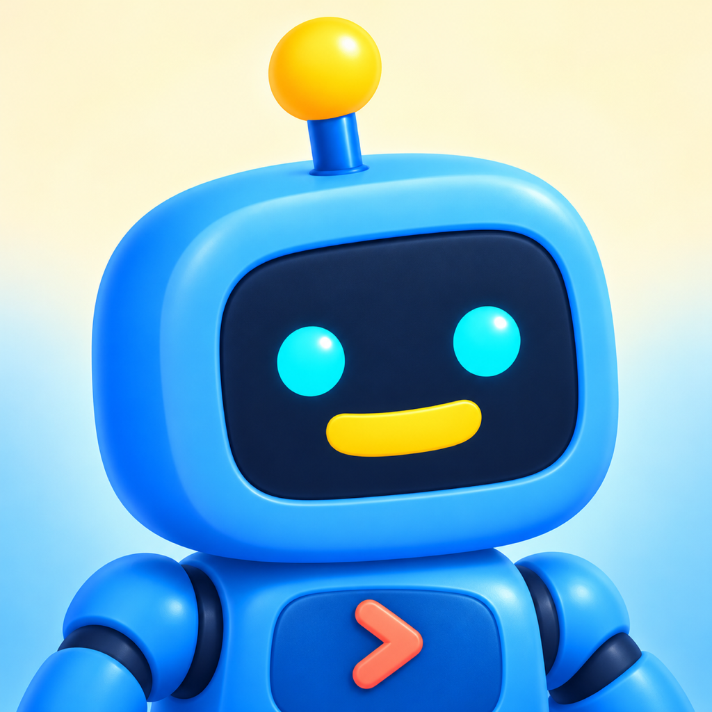
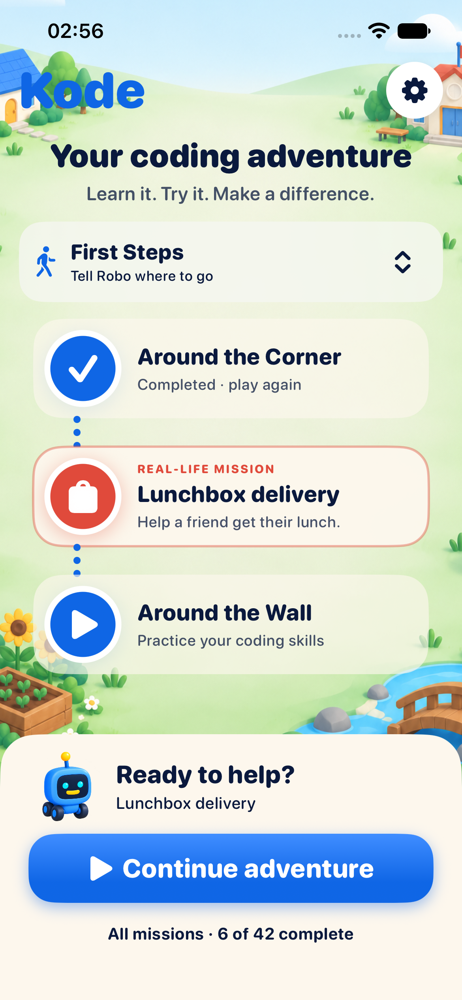
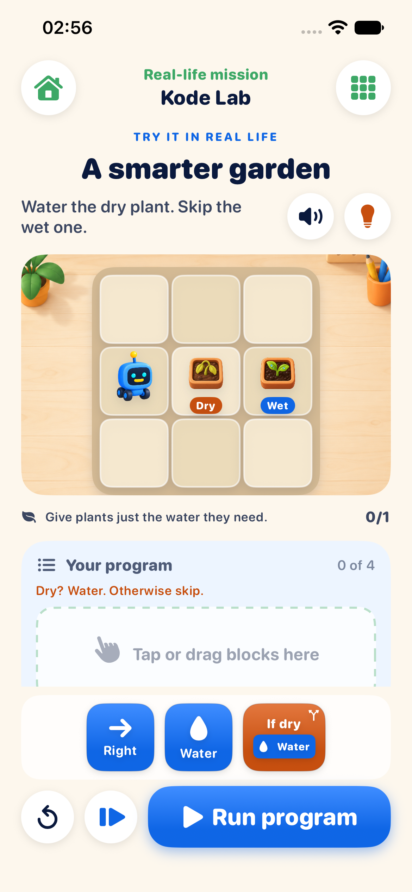

A plan for lunch
Put instructions in order, then use that sequence to pick up a lunchbox and deliver it to a friend.

KidKodeA coding adventure for ages 5–12
Help Robo find a way, care for a garden, and sort the recycling. Every playful puzzle connects a coding idea to something a child can understand.
Preparing for the App Store · iPhone & iPad · iOS 27 or later
Learn it. Try it. Make a difference.
Start with simple steps. Build a plan, watch what happens, and try again. As the adventure grows, familiar ideas become tools for helping the world around Robo.
Put instructions in order, then use that sequence to pick up a lunchbox and deliver it to a friend.
Discover how repeating a small set of steps can help Robo care for a whole row of plants.
Use guided rules to water a plant only when it is dry, or send different leftovers to the right place.
Made for curious minds
Colorful command blocks make a program visible. Children practice sequencing, loops, debugging, and guided conditions while exploring an inviting neighborhood.


Actual app screens. KidKode appears as Kode on your device.
Room to explore
No accounts, ads, or in-app purchases. Lessons work offline, and progress is saved locally.
Spoken instructions use Apple's installed system voices. Grown-up Settings include sound and narration preferences and a way to reset progress.
Younger learners may enjoy exploring alongside a grown-up. Read our privacy policy or find help.